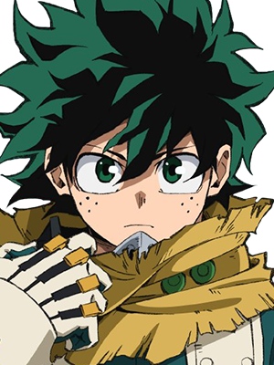

Izuku Midoriya
My Hero Academia
About
Izuku Midoriya, also known as Deku, is the main protagonist of My Hero Academia. Born without a Quirk (superpower) in a world where almost everyone has one, he dreamed of becoming a hero. His life changed when he met All Might, the greatest hero, who passed down his Quirk "One For All" to Midoriya.
Personality
Midoriya is analytical, kind, and determined. He constantly takes notes and analyzes situations to find the best solution. Despite facing hardships, he never gives up and always strives to save others. He deeply admires All Might and works hard to become the greatest hero.
Plot
The story surrounding Izuku Midoriya in My Hero Academia follows a boy born without superpowers—known as “Quirks”—in a world where they are the norm. Despite this, Izuku dreams of becoming a hero like his idol, All Might. After a chance encounter, All Might recognizes Izuku’s courage and passes on his powerful Quirk, One For All, to him. Izuku then enrolls in U.A. High School, a prestigious academy for training future heroes, where he struggles to control his new abilities while keeping up with naturally gifted classmates. As the story progresses, Izuku faces dangerous villains, including the League of Villains led by Tomura Shigaraki, and becomes entangled in a larger conflict tied to the legacy of One For All. Along the way, he grows from a timid, self-doubting boy into a determined and strategic hero-in-training. His journey is about perseverance, self-sacrifice, and understanding what it truly means to be a hero—not just having power, but using it to protect others at any cost.
Abilities
- One For All: stockpiles power from previous users
- Full Cowl: distributes power throughout his body
- Detroit Smash: powerful smash attack
- Blackwhip: creates tendrils of energy from his arms
- Float: allows flight
- Smear: danger sense ability